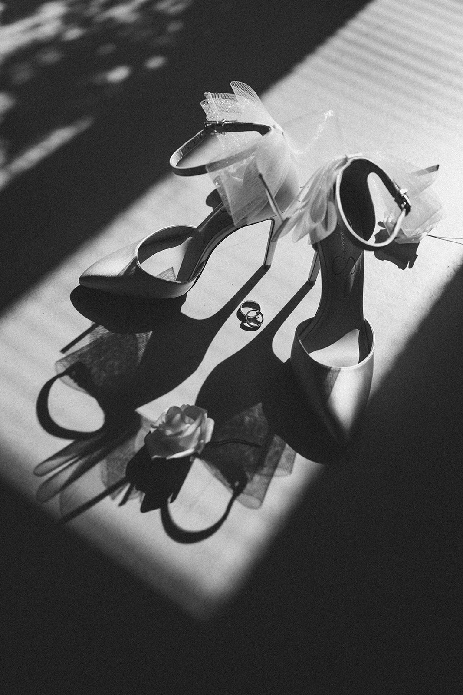

Über Uns
Über Uns
Wir sind Kiran & Ian — Freunde seit der Schulzeit, heute ein eingespieltes Duo, das euren Hochzeitstag in Foto & Film festhält.

Unser Team
Willkommen bei Walking Weddings, eurem Fotografie- und Filmteam aus Wien! Als erfahrenes Team und langjährige Freunde haben wir gemeinsam die Fotografie erlernt und sind darauf spezialisiert, eure Hochzeiten zu begleiten.
Unsere Verbindung prägt unsere Arbeit: Sie schafft Vertrauen, Ruhe und eine Atmosphäre, in der ihr einfach ihr selbst sein könnt. Was uns besonders macht? Wir sind beide Hybrid — wir fotografieren und filmen gleichzeitig, fangen mehrere Perspektiven ein und erzählen authentische Geschichten voller Emotion.
Unsere Philosophie
Unsere Philosophie verbindet Empathie und Authentizität des visuellen Storytellings mit der Tiefe persönlicher Verbindungen. Wir glauben daran, Vertrauen aufzubauen und zu verstehen, damit natürliche und herzliche Momente eingefangen werden können.
Wir erzählen eure Liebesgeschichte aus zwei Blickwinkeln — mit zeitlosen Bildern und lebendigen Filmen, die eure Erinnerungen genau so bewahren, wie sie sich angefühlt haben. Mit Wien als unserem Zuhause arbeiten wir weltweit, um eure einzigartigen Momente festzuhalten.

Das Team

Fotograf & Videograf
Ursprünglich drehte sich Kirans Welt um Mode- und Food-Fotografie. Das änderte sich, als er anfing, die Hochzeiten enger Freunde festzuhalten — darunter auch Ians Hochzeit. Es ging über reine Fotografie hinaus: Er erschuf Geschichten und verewigte flüchtige Momente.
Bei Walking Weddings ist Kiran mehr als ein Fotograf — er ist ein visueller Geschichtenerzähler, der die Kunst der Fotografie nahtlos mit dem Zauber bewegter Bilder verbindet. Sein Ansatz ist herzlich und fokussiert darauf, eine Geschichte zu weben, die die Emotionen und die Atmosphäre eures Tages einfängt.

Fotograf & Videograf
Einst skeptisch gegenüber professioneller Hochzeitsfotografie, änderte sich Ians Perspektive bei seiner eigenen Hochzeit komplett. Sein Freund und Geschäftspartner Kiran hielt den Tag fest — und Ian war überwältigt von den wunderschönen Erinnerungen, die entstanden.
Als Autodidakt basiert Ians Ansatz auf echter Leidenschaft und einer frischen Perspektive. Sein Ziel ist es, jedes Paar wirklich kennenzulernen und eine Beziehung des Vertrauens aufzubauen — damit ihr euch wohlfühlt und eure wahre Persönlichkeit in jedem Bild durchscheint.
100+
Hochzeiten
5
Jahre Erfahrung
★ 5.0
Bewertung